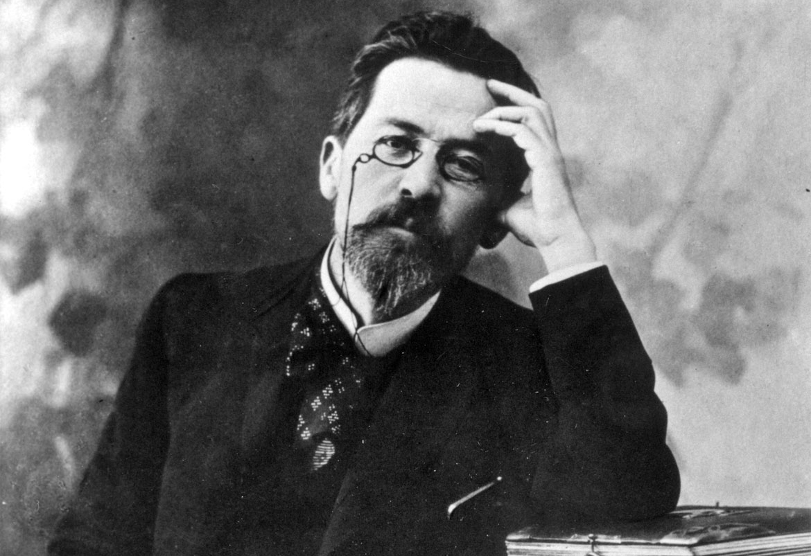

Драматургия
Драматургические произведения Чехов начал писать в 1870-е годы. Учась в гимназии, он сочинял пьесы, в большинстве не сохранившиеся. На втором курсе он написал драму, которая ныне ставится под названием «Платонов». В 1885 году написал этюд «На большой дороге», который не был допущен к постановке цензурой. Его пьесы «Лебединая песня (Калхас)», «Иванов», «Медведь», «Предложение» печатались и ставились с 1887 года.
Чехов-врач
Благодаря «медицинскому» ви́дению Чехова литература обязана появлению в ней галереи неповторимых чеховских образов врачей (зачастую грубых, невежественных, равнодушных, но и чутких, ранимых, бесправных), фельдшеров, неврастеников, чеховских «хмурых людей». Его рассказы — это не «записки врача» в узком смысле, это диагноз несовершенному обществу. В качестве практикующего доктора Чехов получил обильный материал для художественных обобщений, наблюдая изнутри жизнь самых разных социальных слоёв. Как наблюдательному и умному художнику ему оставалось лишь сделать самостоятельные выводы.
Чехов фото писателя

© Жванько Екатерина Александровна